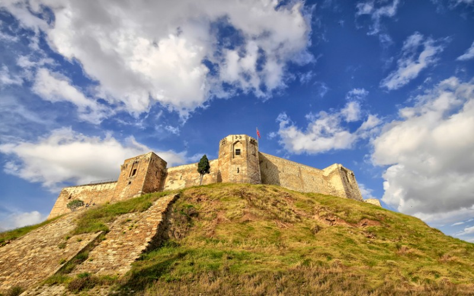
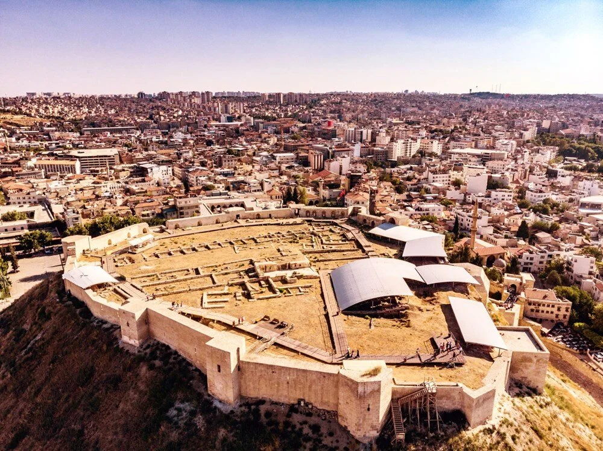

Gaziantep Kalesi, Türkiye’de ayakta kalabilen kalelerin en güzel örneklerinden birisi olup, gerek ihtişamı ve heybetiyle, gerekse bir sır gibi gizlediği tarihiyle şehir merkezinde, Alleben Deresi’nin güney kenarında, yaklaşık 25 m yükseklikte hemen herkesin dikkatini çeken bir tepe üzerindedir.
Gaziantep Kalesinin ne zaman ve kimler tarafından yapıldığı hususunda kesin bir bilgi bulunmamakla birlikte tarihi günümüzden 6000 yıl geçmişe, kalkolitik döneme kadar giden bir höyük üzerinde kurulduğu, M.S II-III yüzyıllarda ise kale ve çevresinde “Theban”isimli küçük bir kentin olduğu bilinmektedir.

Kalenin Dışından Başka Bir Görüntü
M.S. II-IV. yüzyıllarda Kalenin, ilk olarak Roma döneminde bir gözetleme kulesi olarak yapıldığı ve zaman içerisinde genişletildiği yapılan arkeolojik kazılar neticesinde anlaşılmıştır. Bugünkü biçimini ise “Kaleler Mimarı” olarak adlandırılan Bizans İmparatoru Justinyanus döneminde M.S. VI. (M.S 527-565) yüzyılda almıştır. Yine bu dönemde kale önemli bir onarım geçirmiş olup, onarım sırasında tesviyenin sağlanması için, güney bölüm kemerli ve tonozlu galerilerden oluşan substrüksiyon (temel) yapılarıyla donatılmış, bu galerilerle birbirine bağlanan kuleler inşaa edilmiş ve sur bedenleri batı, güney ve doğuya, tepenin sınırına kadar genişlemiştir. Kale bu haliyle çapı yaklaşık ., çevresi . olan gayrı muntazam dairesel bir şekle sahiptir. Kale bedenleri üzerinde 12 adet kule mevcuttur. Evliya Çelebi Seyahatnamesinde Kale’nin 36 burcundan bahsetmektedir. Günümüzde ise bunların yalnızca 12 tanesini görebilmekteyiz. Geri kalan 24 burcun ise kalenin dış surları üzerinde bulunduğu ve günümüz kadar gelemediği sanılmaktadır. Kale çevresinde, eni ., derinliği ise . olan bir hendek bulunmakta ve kaleye geçiş ise köprü ile sağlanmaktaydı. Kale köprüsünü geçip, asıl kale kapısına ulaşmadan, sol tarafta ise halk tarafından İmam-ı Gazali Hazretlerinin Makamı olarak adlandırılan bir burç bulunmaktadır.

Kalenin İçi
Bizans dönemini takip eden yıllarda özellikle Memluklular, Dulkadiroğulları ve Osmanlılar ihtiyaca göre kaleyi zaman zaman onarmışlar ve buna dair de onarım kitabeleri koymuşlardır.Kale ikinci defa, 1481 yılında Mısır Sultanı Kayıtbay tarafından elden geçirilmiştir. Ana kapı üzerinde yer alan kitabeden, ana kapı ve kale köprüsünün iki yanındaki kulelerin, Osmanlı İmparatorluğu döneminde Kanuni Sultan Süleyman tarafından 1557 yılında yeniden yaptırıldığı anlaşılmaktadır